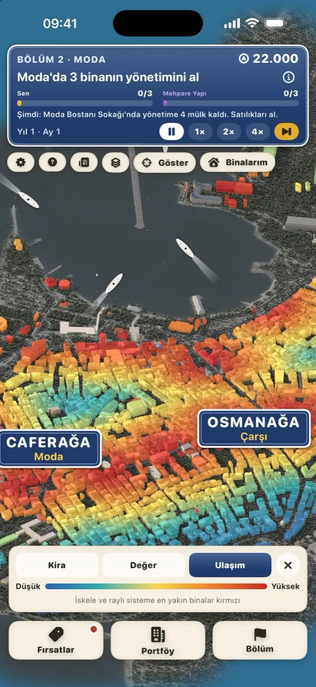
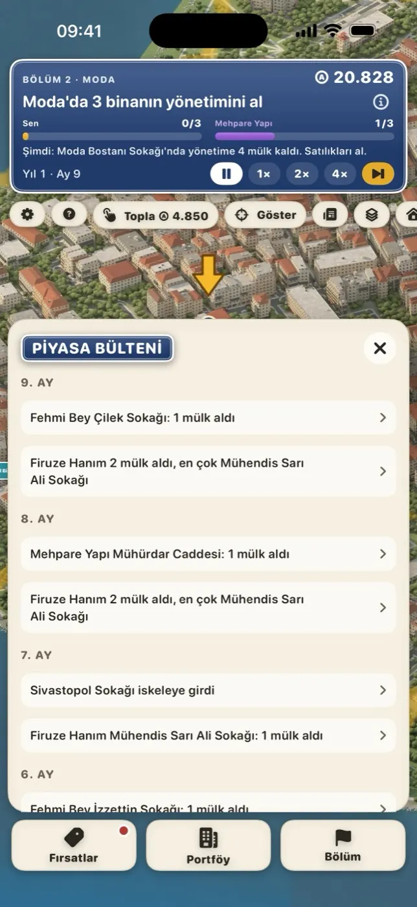
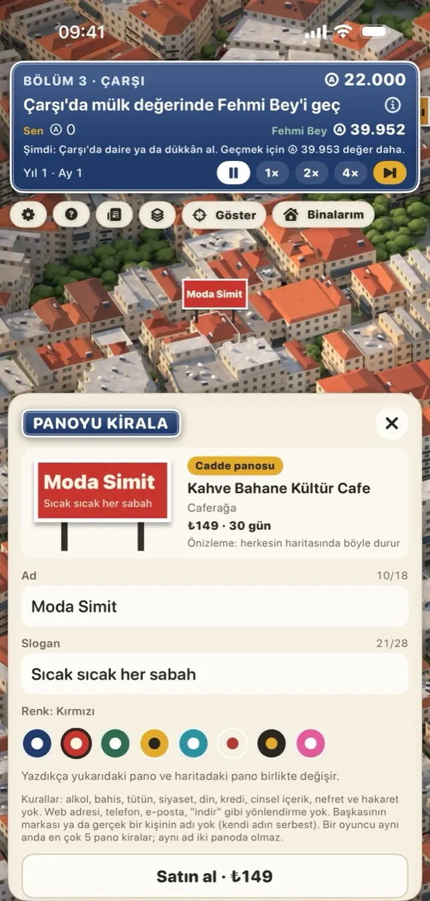
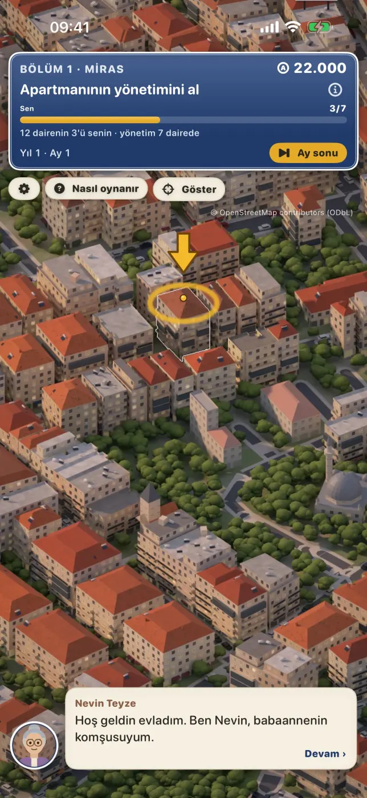
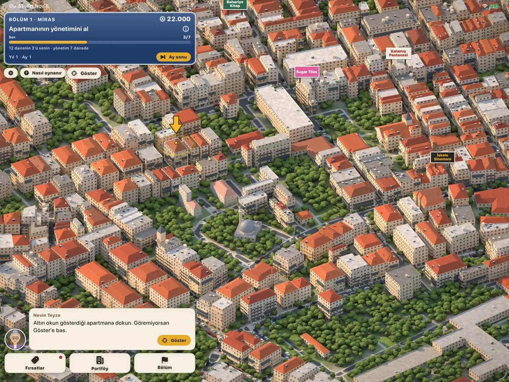

Emlak Kralıİstanbul
Kadıköy'deki her bina gerçek ve satılık. Artık rakiplerin de gerçek.
Emlak Kralı, veriden çizilmiş izometrik bir İstanbul'da geçen bir emlak oyunu. Kadıköy'ün 4.871 binası OpenStreetMap verisinden kendi 3B modelimizle çizildi: kiremit çatılar, balkonlar, iskeleler, vapurlar. Babaannenden kalan daireyle başla; daire daire al, kiraya ver, binanın yönetimini kap. Kariyerde Mehpare Yapı'yla, Canlı Kadıköy'de gerçek oyuncularla yarış.
Daire daire al, binayı yönet
Semtten sokağa, sokaktan binaya in. Her binanın kartında katı, yaşı, değeri, kirası ve "Değer neden bu?" dökümü var: deniz, park, cadde, iskele, gürültü.
- Bina bina
- Daireleri ve dükkânları tek tek satın al. Bir binadaki dairelerin yarısından fazlası seninse yönetim sende, öteki ev sahipleri sana aidat öder. Yenile, cepheyi elden geçir, eski binayı depreme karşı güçlendir, kiracını sen seç.
- Canlı Kadıköy
- Gerçek oyuncularla aynı haritada, iki haftalık sezonlar. Bir dünyada 60 oyuncuya kadar ve üç yatırım fonu. Oyuncular listesinde kimin bu sezonda, kimin şu an bağlı olduğunu görürsün.
- Kariyer
- Beş bölüm, Moda'dan Kadıköy'ün tamamına. Her bölümde tek bir açık hedef ve seni geçmeye çalışan bir rakip; kentsel dönüşümcü Mehpare Yapı bunların en inatçısı. Sonra Kadıköy Kariyeri'nin unvanları. Çevrimdışı oynanır, duraklatılır.
- Haritayı oku
- Dört katman: Sahipler, Kira, Değer, Ulaşım. Kimin nerede güçlü olduğunu, kiranın nerede yüksek olduğunu, iskeleye ve raya en yakın binaları tek bakışta gör.
- Piyasa Bülteni
- Sen yokken rakipler ne aldı, ay ay oku. Bir satıra dokun, harita oraya gitsin. Duyurulan olaylar da kısa görevler getirir.
- Panonu kirala
- Haritadaki bir reklam panosuna adını ve sloganını yaz; yazdıkça pano haritada değişir. Ödeme Apple ile, 30 gün, kendiliğinden yenilenmez. Pano oyunda güç vermez.
- Yaşayan şehir
- Sokaklarda arabalar ve insanlar, iskelelerde vapurlar, rayda Marmaray treni, şantiyelerde vinçler. Hava değişir, bir sokak kedisi dolaşır, akşamüstü şehir altın saate döner, gece pencereler yanar.
- Her hafta
- Haftalık Yarış ve Haydarpaşa'dan Fenerbahçe'ye altı lig; Günün Fırsatı; Kadıköy Albümü; Game Center başarıları.
- Adil
- Ücretsiz. Enerji yok, bekleme süresi yok, oyunda güç satılmaz; tek ücretli şey pano kiralamak. Reklam ağı yok, geçiş reklamı yok, takip yok.





Canlı Kadıköy nasıl işler
Herkes aynı Kadıköy'de, aynı ilanlar için yarışır. Kurallar sunucuda işler; sen yokken de dünya akar.
- Tek ortak sezon, 14 gün. Yeni sezon iki haftada bir pazartesi saat 10:00'da (İstanbul) açılır. Sezonun her günü katılabilirsin.
- Game Center ile gir. Adın Game Center takma adındır.
- 60 oyuncu ve 3 fon. Bir dünyada 60 oyuncuya kadar gerçek rakip ve "Fon" etiketli üç yatırım şirketi var. Dünya dolarsa aynı sezonun ikinci dünyası açılır.
- Kim burada, görürsün. Oyuncular listesi bu sezonda kimin oynadığını ve kimin şu an bağlı olduğunu gösterir. Uygunsuz bir adı uzun basıp gizleyebilir ya da şikâyet edebilirsin.
- Sezon sonunda sıralama donar. Net serveti en yüksek üç oyuncu Onur listesine yazılır ve kalıcı bir unvan alır. İlk üçün özel bir rozeti olur.
- Şampiyona küçük bir avantaj. İlk üç, bir sonraki sezona biraz daha fazla başlangıç akçesiyle girer. Avantaj yalnız o bir sezon içindir; sonra herkes yine eşit başlar.
- Kariyerin bekler. "Kariyere dön" seni kariyerinde kaldığın yere götürür; canlı dünya kariyerine dokunmaz.
Başlangıç akçesine eklenir, yalnız bir sonraki sezonda geçerlidir. Canlı Kadıköy verilerini istediğin an Ayarlar → "Canlı Kadıköy verilerimi sil" ile silebilirsin.

Harita verisi © OpenStreetMap contributors, ODbL. Emlak Kralı bir Hawk & Mason Studios oyunudur.
Estate KingIstanbul
Every building in Kadıköy is real, and for sale. Now your rivals are real too.
Estate King is a real-estate game set in an isometric Istanbul drawn from data. Kadıköy's 4,871 buildings are rendered from OpenStreetMap data with our own 3D model. Start with your grandmother's flat; buy flat by flat, rent out, take over the building. Race the developer Mehpare Yapı in the career, or real players in Live Kadıköy.
- Building by building
- Buy flats and shops one at a time; own more than half and you manage the building, service fees flow to you. Renovate, retrofit old buildings, choose your tenants.
- Live Kadıköy
- Real players on the same map in two-week seasons: up to 60 players and three investment funds per world, with a list of who is playing and who is online now.
- Career
- Five chapters from Moda to all of Kadıköy, each with one clear goal and a rival, then the titles of the Kadıköy Career. Offline, pausable.
- Read the map
- Four layers (owners, rent, value, transport), a market bulletin of what rivals bought while you were away, and short goals from announced events.
- Rent a billboard
- Write your name and slogan on a billboard on the map and watch it change as you type. Paid through Apple, 30 days, no auto-renewal, no gameplay advantage.
- A living city
- Cars and people, ferries, the Marmaray train, cranes, changing weather, a street cat, golden hour and lit windows at night. iPad layout included.
- Fair
- Free. No energy timers, no power for sale; the only paid item is a billboard. No ad networks, no tracking.
How Live Kadıköy works
- One shared 14-day season. A new one opens every second Monday at 10:00 Istanbul time; you can join on any day.
- Sign in with Game Center. Up to 60 players and 3 funds share one world; a second world opens when it is full.
- Hall of honours. At the end the top three by net wealth go on the Onur listesi, earn a permanent title and a special badge.
- A small head start. Next season only, the top three start with extra akçe: 1st +10%, 2nd +6%, 3rd +3%.
Map data © OpenStreetMap contributors, ODbL. Estate King is a Hawk & Mason Studios game.